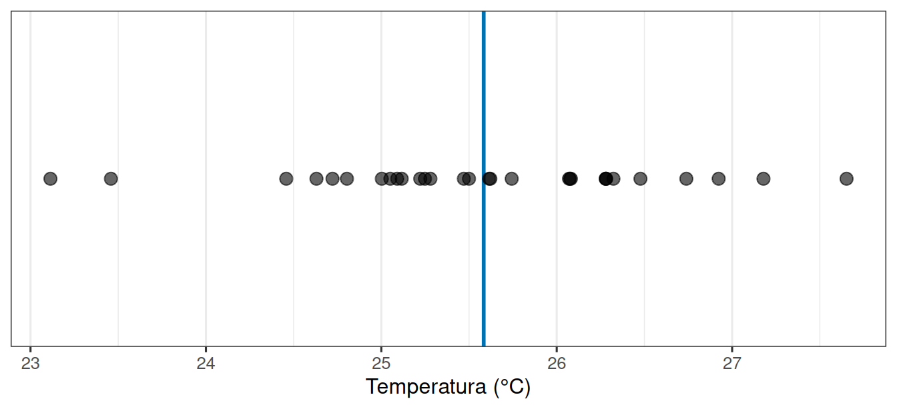
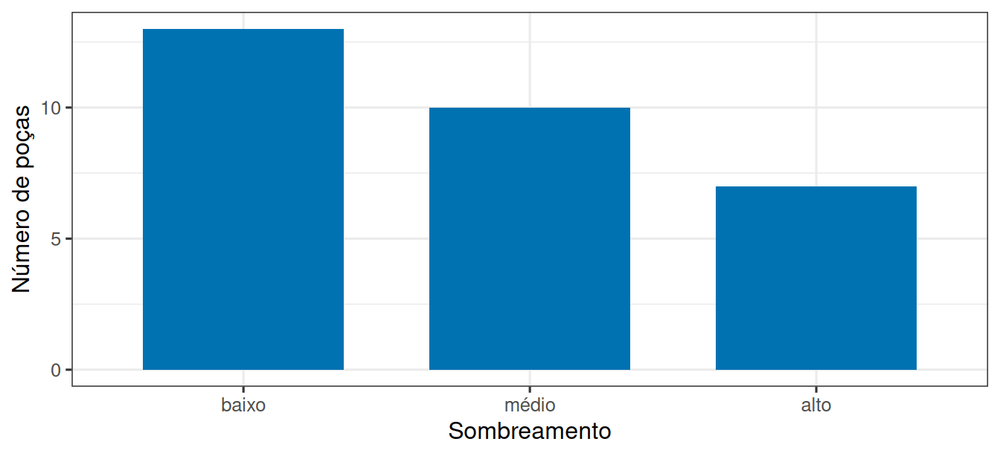
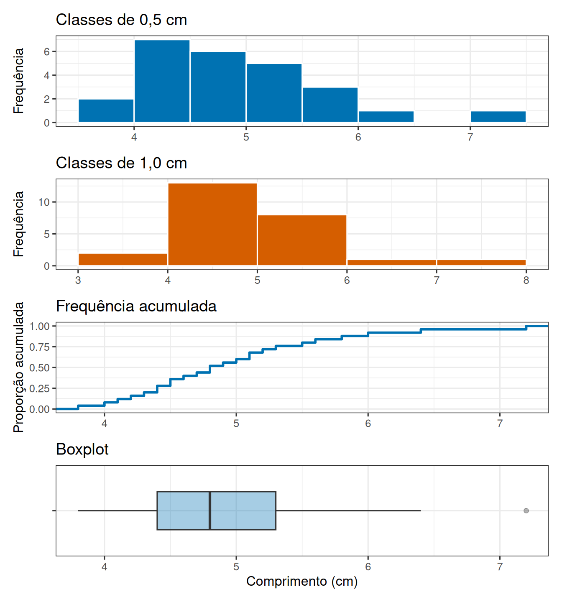

| Poça | Temperatura (°C) | Profundidade (cm) | Sombreamento |
|---|---|---|---|
| 1 | 25.4 | 12 | baixo |
| 2 | 25.9 | 8 | baixo |
| 3 | 24.8 | 20 | alto |
| 4 | 26.3 | 6 | baixo |
| 5 | 25.1 | 15 | médio |
Por que duas medidas nunca são iguais?
Leitura prévia
1 Duas medidas, dois números
Você desce até um costão rochoso com um termômetro, mede a temperatura da água em uma poça de maré e registra 25,4 °C. Um colega mede a poça ao lado e registra 25,9 °C. Em uma terceira poça, medimos 24,8 °C.
Essa é a situação mais comum em qualquer ciência que trabalha com o ambiente. Quando repetimos uma medida, quase nunca obtemos o mesmo valor e a primeira decisão de quem analisa dados é justamente como lidar com essa diferença?
Uma possibilidade seria tratar a variação como defeito, assumindo que “o método está impreciso”. Outra possibilidade é ignorá-la e usar apenas a média, neste caso, assumir a temperatura “correta” como 25,37 °C. Nesta unidade curricular seguiremos por outro caminho. Nossos objetivos serão compreender de onde vem a variabilidade observada e o que essa variabilidade nos informa.
1.1 De onde vem a diferença entre duas medidas?
Quando dois números diferem, pelo menos três coisas podem estar acontecendo ao mesmo tempo.
As poças são realmente diferentes. Uma recebe mais sol, outra é mais funda, outra é mais sombreada por algas. Essa é uma diferença que existe no mundo e tem uma causa específica, independentemente de você medi-la.
O instrumento não é perfeito. O mesmo termômetro, na mesma poça, no mesmo instante, pode registrar 25,4 ou 25,5 °C. Essa diferença não está na poça, está na medição.
Você escolheu essas poças e não outras. Havia dezenas de poças no costão e você mediu três. Outro grupo de pesquisadores medindo outras poças registraria outros números, sem uma causa conhecida.
As três fontes se somam no valor que você anota na planilha e separá-las é o objetivo do delineamento experimental.
2 A unidade amostral e a tabela de dados
Reconhecer que os valores variam ainda não diz o que cada valor representa. Antes de anotar qualquer número, é preciso responder a uma pergunta, o que o número descreve?
No exemplo, cada número descreve uma poça de maré. A poça é a unidade amostral, a unidade sobre a qual a medida é feita. Se estivéssemos pesando peixes, a unidade seria cada peixe. Se contássemos espécies em quadrados de 1 m² na praia, a unidade seria cada quadrado.
Essa escolha parece óbvia, mas há um ponto que deve ser ressaltado. Se você mede a temperatura da mesma poça cinco vezes, você tem cinco medidas, mas continua tendo uma única unidade amostral, a poça. Cinco medidas de uma mesma poça, portanto, não são o mesmo que uma medida de cinco poças diferentes, ainda que a planilha fique com cinco linhas nos dois casos.
2.1 Cada linha é uma unidade, cada coluna é uma característica
Para registrar um conjunto de dados seguiremos sempre a mesma regra:
- cada linha é uma unidade amostral;
- cada coluna é uma característica medida nessa unidade.
Para as poças de maré, teríamos:
A coluna poca não é uma medida, é o identificador da unidade. As outras três colunas são características dessa unidade, duas numéricas e uma categórica.
Guardar os dados nesse formato nos permite responder perguntas como “as poças mais fundas são mais frias?”.
2.2 Ausência de informação não é um valor zero
Nem sempre toda célula da tabela está preenchida. Uma célula vazia pode significar que a profundidade não foi medida, que o instrumento falhou ou que a anotação se perdeu. Em R, essa ausência é representada por NA. Ela não deve ser substituída por zero. Profundidade igual a zero é uma medida possível e tem significado científico, enquanto a profundidade desconhecida é falta de informação.
Antes de resumir uma coluna, convém contar quantos valores estão ausentes e perguntar por quê. Se a ausência ocorrer sobretudo nas poças mais profundas ou nos dias de mar agitado, remover essas linhas pode alterar a distribuição observada. Nestes casos, até um procedimento aparentemente simples como calcular uma média precisa de justificativa.
3 Que tipo de característica foi registrada?
As colunas da tabela não admitem todas o mesmo tratamento. O código da poça poderia ser 1, 2 ou 3. Assim, uma coluna pode guardar números que não representam uma quantidade e calcular a média dessa coluna não teria sentido. Antes de escolher um resumo ou um gráfico, precisamos portanto identificar o tipo da variável.
Variáveis qualitativas registram categorias. Elas podem ser nominais, quando não existe uma ordem natural, como o tipo de substrato, ou ordinais, quando os níveis têm ordem, como sombreamento baixo, médio e alto. Variáveis quantitativas registram quantidades. Uma contagem de espécies é discreta, pois assume valores inteiros, enquanto temperatura e profundidade são contínuas, pois podem assumir qualquer valor dentro da precisão do instrumento.
A escala também limita as operações válidas. Em uma escala de razão, como comprimento em centímetros, o zero representa ausência da quantidade e faz sentido dizer que 20 cm é o dobro de 10 cm. Em temperatura Celsius, o zero é convencional e 20 °C não é duas vezes mais quente que 10 °C. A média continua válida, mas a razão entre os valores não tem essa interpretação física.
As quatro escalas usuais organizam as operações que fazem sentido:
| Escala | O que é preservado | Exemplo | Resumos compatíveis |
|---|---|---|---|
| Nominal | igualdade ou diferença | tipo de substrato | contagens, proporções, moda |
| Ordinal | igualdade e ordem | sombra baixa, média, alta | contagens, proporções, mediana, quantis |
| Intervalar | igualdade, ordem e diferenças | temperatura em °C | média, desvio-padrão, diferenças |
| Razão | igualdade, ordem, diferenças e razões | comprimento, massa, contagem | todos os anteriores e razões como o CV |
A classificação não depende de como a coluna foi armazenada. Uma categoria ordinal salva como 1, 2 e 3 continua sendo categórica. Um comprimento digitado com vírgula e importado como texto continua sendo uma quantidade que precisa ser corrigida antes da análise.
4 Centro, posição e espalhamento
Sabendo que a temperatura é uma variável quantitativa contínua, podemos resumi-la. Cinco números são poucos para enxergar um padrão. Com trinta poças, a Figura 1 mostra o que costuma acontecer. Os valores se espalham em torno de um centro, a maioria perto dele e poucos bem longe.

Duas propriedades descrevem essa figura, e vamos usá-las o semestre inteiro:
- onde está o centro: a média das trinta medidas;
- quão espalhados estão os valores em torno desse centro.
Um resumo que informa só o centro esconde a estrutura da variação. Dizer “a temperatura média é 25,5 °C” é verdadeiro tanto para poças que variam de 25,4 a 25,6 quanto para poças que variam de 21 a 30, ainda que estas sejam situações completamente diferentes. Vale, portanto, definir com precisão cada uma dessas duas quantidades.
Considere valores \(x_1,x_2,\ldots,x_n\). A média amostral é
\[ \bar{x}=\frac{1}{n}\sum_{i=1}^{n}x_i. \]
Ela funciona como o ponto de equilíbrio dos valores e usa todas as observações. Por isso também é sensível a valores extremos. A mediana é o valor central depois de ordenar os dados e costuma representar melhor o centro de distribuições muito assimétricas. A moda é o valor ou categoria mais frequente e pode ser usada tanto com variáveis quantitativas quanto qualitativas.
Além do centro, interessa localizar uma observação dentro do conjunto ordenado. Os quartis dividem os valores ordenados em quatro partes. O primeiro quartil, \(Q_1\), deixa cerca de 25% das observações abaixo dele, a mediana, \(Q_2\), deixa 50%, e \(Q_3\) deixa 75%. A distância \(AIQ=Q_3-Q_1\) é a amplitude interquartil. Ela descreve a metade central dos dados e resiste melhor a extremos que a amplitude total, calculada por máximo menos mínimo.
O espalhamento pode ser medido pela variância. A variância amostral mede a média dos desvios quadráticos em relação a \(\bar{x}\):
\[ s^2=\frac{\sum_{i=1}^{n}(x_i-\bar{x})^2}{n-1}. \]
Os desvios são elevados ao quadrado para que afastamentos positivos e negativos não se cancelem. O divisor \(n-1\) corrige a tendência de subestimar a variância populacional quando o centro também foi estimado pela amostra. Como \(s^2\) fica em unidades ao quadrado, usamos com frequência o desvio-padrão, \(s=\sqrt{s^2}\), que volta à unidade original. Se \(s=1,1\) °C, interpretamos que as temperaturas costumam se afastar da média por uma ordem de grandeza próxima de 1,1 °C.
Quando duas variáveis positivas usam escalas muito diferentes, o coeficiente de variação \(CV=100s/\bar{x}\) expressa o desvio-padrão como porcentagem da média. Ele não é adequado quando a média está perto de zero ou quando o zero da escala é arbitrário, como em graus Celsius.
Todas essas medidas cabem em poucas linhas de código, aplicadas às cinco temperaturas do início:
Ver os resumos em R
temperaturas_exemplo <- c(25.4, 25.9, 24.8, 26.3, 25.1)
moda <- function(x) {
frequencias <- table(x)
as.numeric(names(frequencias)[frequencias == max(frequencias)])
}
tibble(
media = mean(temperaturas_exemplo),
mediana = median(temperaturas_exemplo),
moda = paste(moda(temperaturas_exemplo), collapse = ", "),
variancia = var(temperaturas_exemplo),
desvio_padrao = sd(temperaturas_exemplo),
coeficiente_variacao = 100 * sd(temperaturas_exemplo) / mean(temperaturas_exemplo),
minimo = min(temperaturas_exemplo),
q1 = quantile(temperaturas_exemplo, 0.25),
q3 = quantile(temperaturas_exemplo, 0.75),
maximo = max(temperaturas_exemplo)
)# A tibble: 1 × 10
media mediana moda variancia desvio_padrao coeficiente_variacao minimo q1
<dbl> <dbl> <chr> <dbl> <dbl> <dbl> <dbl> <dbl>
1 25.5 25.4 24.8,… 0.365 0.604 2.37 24.8 25.1
# ℹ 2 more variables: q3 <dbl>, maximo <dbl>Neste conjunto todos os valores ocorrem uma vez, portanto não existe uma moda única. Isso mostra por que a moda é especialmente natural para categorias e valores discretos, mas pode ser pouco útil para medidas contínuas registradas com alta precisão.
4.1 Uma conta completa de variância
Acompanhar a variância uma vez, valor por valor, deixa claro o que a fórmula faz. Para \(25{,}4\), \(25{,}9\), \(24{,}8\), \(26{,}3\) e \(25{,}1\) °C, a média é 25,5 °C. Os desvios em relação à média são \(-0{,}1\), \(0{,}4\), \(-0{,}7\), \(0{,}8\) e \(-0{,}4\) °C. A soma dos desvios é zero, por isso não podemos usá-la como medida de variação. Elevando-os ao quadrado, obtemos soma igual a 1,46 °C². Ao dividir por \(n-1=4\), a variância é 0,365 °C² e o desvio-padrão é aproximadamente 0,604 °C.
O cálculo separa três ideias, um centro estimado, os afastamentos de cada unidade e um resumo desses afastamentos. Ele também deixa explícitas as unidades. A variância está em °C², enquanto o desvio-padrão volta a °C e pode ser comparado diretamente aos valores medidos.
5 Da lista de valores à distribuição
Média e desvio-padrão comprimem trinta números em dois, e nessa compressão muita informação se perde. Para recuperar parte dela, contamos quantas unidades ocorrem em cada valor ou em cada faixa de valores. É isso que transforma uma lista de medidas em uma distribuição.
5.1 Frequências de uma variável qualitativa
Para uma variável qualitativa, a distribuição é descrita contando os níveis. A frequência absoluta \(f_j\) é o número de unidades na categoria \(j\), e a frequência relativa é
\[ p_j=\frac{f_j}{n}, \]
em que \(n\) é o total de unidades. A soma de todos os \(f_j\) é \(n\), e a soma dos \(p_j\) é 1, ou 100%. Em variáveis ordinais também podemos acumular as frequências seguindo a ordem dos níveis. Em uma variável nominal, acumular categorias não tem interpretação porque não existe uma ordem intrínseca.

As barras da Figura 2 não se encostam porque baixo, médio e alto são categorias. A ordem é informativa, mas a distância visual entre baixo e médio não representa uma diferença numérica conhecida.
5.2 Classes, histogramas e boxplot
Uma variável quantitativa contínua raramente repete valores, de modo que contar ocorrências uma a uma não produz um resumo útil. Agrupamos então os valores em classes. Se a classe \(j\) tem limites \(a_j\) e \(a_{j+1}\), contamos as observações com \(a_j\le x<a_{j+1}\). A escolha da largura modifica a aparência. Classes largas escondem detalhes e classes estreitas deixam o ruído amostral dominar. A Figura 3 representa os mesmos comprimentos de quatro maneiras.

Os dois histogramas descrevem exatamente os mesmos dados e sugerem formas um pouco diferentes, o que já é um aviso contra ler detalhes finos de um histograma isolado. No gráfico acumulado, a altura em 5 cm informa a proporção de unidades com comprimento menor ou igual a 5 cm. No boxplot, a caixa vai de \(Q_1\) a \(Q_3\), a linha interna é a mediana e as linhas avançam até os valores observados dentro dos quartis \(Q_1-1{,}5\,AIQ\) e \(Q_3+1{,}5\,AIQ\).
Pontos além desses limites são sinalizados como candidatos a valores atípicos. Eles não são erros por definição. Podem representar falha de digitação, uma unidade biologicamente incomum ou a cauda legítima da distribuição, e por isso devem ser investigados, não apagados automaticamente.
6 Forma, posição relativa e escolha do resumo
As representações anteriores mostram que a distribuição carrega informação que nenhuma medida isolada reproduz. Um histograma divide o eixo numérico em intervalos e conta quantas observações caem em cada um. Um gráfico de pontos preserva cada valor e é especialmente informativo para amostras pequenas. Um boxplot compacta mediana, quartis e valores afastados, sendo útil para comparar grupos, mas esconde detalhes da forma.
Distribuições podem ser aproximadamente simétricas, assimétricas ou ter mais de um agrupamento. Em uma distribuição simétrica e unimodal, média e mediana tendem a ficar próximas. Uma cauda longa para valores altos desloca a média nessa direção, enquanto a mediana muda menos. Dois conjuntos podem ter a mesma média e o mesmo desvio-padrão, mas formas inteiramente diferentes. Por isso a sequência segura é observar os dados, descrever a forma e então escolher resumos compatíveis.
A forma da distribuição também é o que permite situar uma observação individual dentro do conjunto. Para isso, padronizamos o valor:
\[ z_i=\frac{x_i-\bar{x}}{s}. \]
Um escore \(z=1,5\) informa que a observação está 1,5 desvio-padrão acima da média. O escore não indica que o valor é raro por si só. Essa conclusão também depende da forma da distribuição e do número de observações.
Como a transformação apenas muda origem e unidade, o conjunto dos escores tem média zero e desvio-padrão um. Ela permite comparar posições relativas em escalas diferentes. Um organismo com \(z=1{,}2\) para massa e \(z=-0{,}4\) para comprimento está relativamente mais pesado que comprido em relação aos respectivos grupos, sem que massa e comprimento tenham sido convertidos para a mesma unidade física.
No início desta leitura, três temperaturas diferentes pareciam apenas ruído de medição. Vistas em um conjunto maior, elas compõem o padrão de distribuição da variável com centro estimado, espalhamento quantificado e forma descrita. Saber dizer onde está o centro das medidas e o quanto elas se afastam dele é a primeira tarefa de quem analisa dados. Como sequência, podemos comparar grupos, testar hipóteses ou ajustar modelos, o que nos ajudará a entender de onde vem a variação observada.